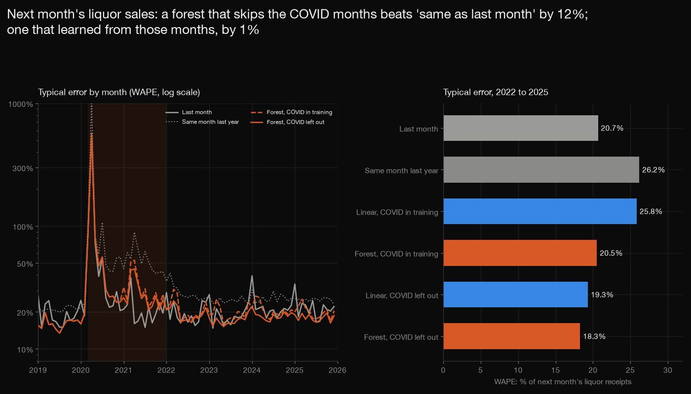
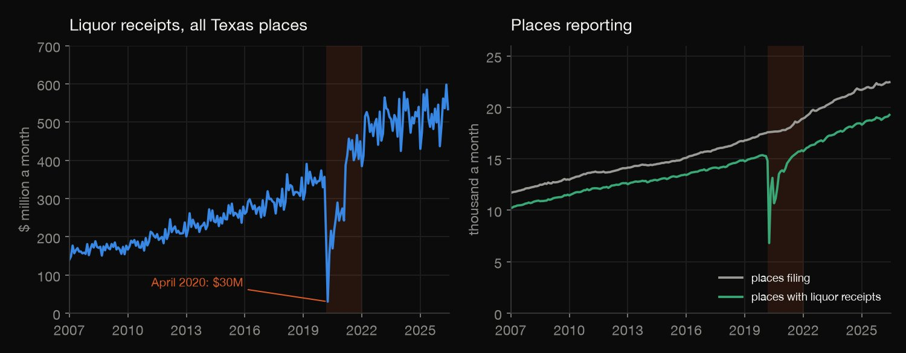
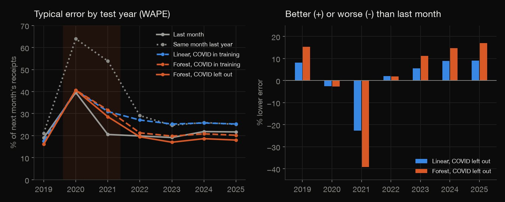
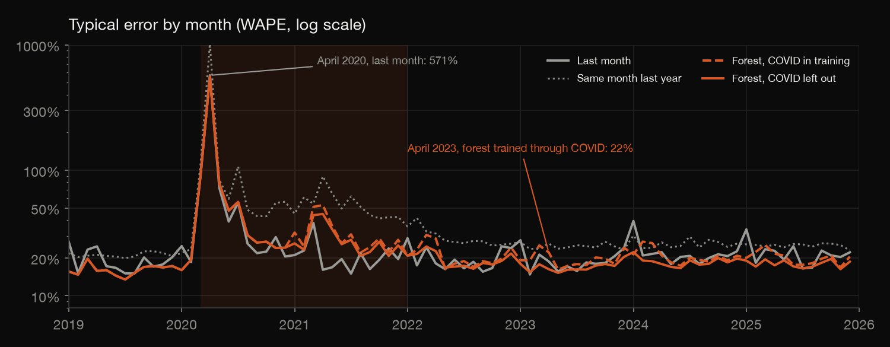
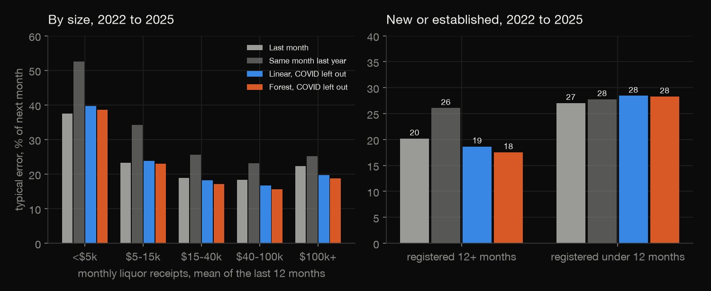
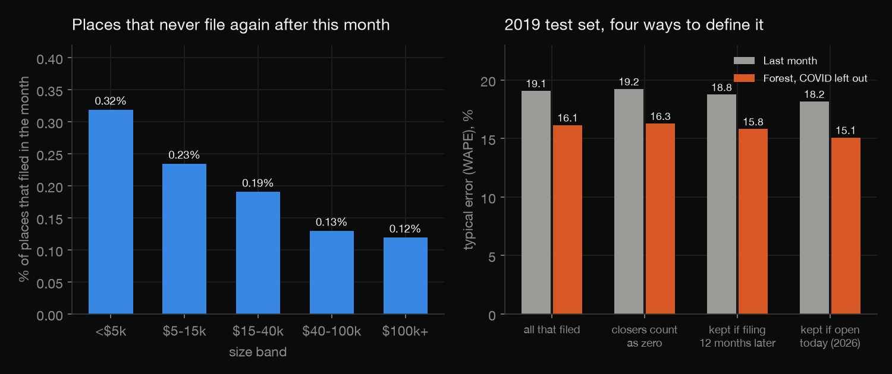

R · Forecasting · 2026-10
Can a Bar's Liquor Sales Next Month Be Predicted?
For 59,833 Texas places, a random forest forecasts next month's liquor receipts 12% closer than 'same as last month' (18.3% against 20.7%, 2022 to 2025), but only if it never learned from COVID: trained through it, it gains 1%. Small and new places gain nothing.

Source: Texas Comptroller of Public Accounts, Mixed Beverage Gross Receipts (data.texas.gov, id naix-2893); the page states no licence, only that the records are public information, so only aggregates are published (no names, addresses or ids). A closed place only means one that never files again; a sale of a bar looks like a closing. One untuned forest and one linear model; weekdays, holidays and weather were not used. The two fitted models are scored from stored forecasts and not refitted by the check.
01 — The problem
A bar owner, a distributor or the tax office wants next month's number before it arrives. How well can a Texas place's liquor receipts next month be predicted from its own past, and what breaks that?
The task follows DataCamp's "Predict Future Sales of Fast-Food Menu Items" (regression, feature engineering and time-aware validation in R), which uses one restaurant chain's course file. The real swap is the Comptroller's Mixed Beverage Gross Receipts: the monthly alcohol sales every licensed Texas bar and restaurant reports for tax, 3,848,245 place-months since 2007, with the COVID shutdown inside it.
02 — What I built
One forecasting question, tested out of sample in time order:
- The data: 3,848,245 rows pulled from the open data API, audited (duplicates, an amended filing, a partial last month, gaps, places that only sell beer and wine).
- The models: last month, the same month last year, a linear model and a random forest, refitted for each test year 2019 to 2025 on the five years before it, with and without the COVID months in training.
- Where they fail: the COVID window, small places, new places, and each test year.
- The closing trap: what the 0.21% of forecasts that are for places that close do, and what filtering to survivors does.
- Check:
check.pyrecounts 2,817 numbers in plain Python from the raw files, with no pandas or numpy.
03 — How it was built
- 01
Download only what is needed
A server-side
$selectof 8 of the 24 columns (no names or addresses), 100,000 rows a page in a fixed order, with a descriptive User-Agent and a one second pause: 3,848,245 rows, about 395 MB, with a row-count check before and after to prove the table did not change mid-download.url <- sprintf("%s.csv?$select=%s&$order=:id&$limit=%d&$offset=%d", BASE, COLS, PAGE, i * PAGE) - 02
Audit before modelling
21 exact duplicate rows go; one place-month appears twice with different amounts (an amended filing) and the row with the larger total is kept; September 2026 holds only 749 early filings and is dropped.
n_conflict <- nrow(dt) - uniqueN(dt, by = c("id", "mi")) - 03
One row per forecast origin
Every place-month with liquor receipts above zero is an origin; the target is the same place's next month, and the lags (last month, two months back, the same month a year before) are looked up from the past only. A place that does not file next month has no target and is kept aside as a closer or a skip.
O[, `:=`(t = o + 1L, y = at(1L), lag2 = at(-1L), lag12 = at(-11L), y_plus12 = at(13L))] - 04
Refit on the past, test on the next year
For each test year the forest and the linear model are fitted only on the five years of targets before it, on a 300,000-row sample, then score every month of the test year. A second pair drops the COVID months from the training window.
rf <- ranger(ly ~ ., data = trf, num.trees = 200, mtry = 5, min.node.size = 20, sample.fraction = 0.7, importance = "impurity", num.threads = 4, seed = Y) - 05
Recount it without the libraries
check.pyrebuilds every origin and both benchmarks from the raw files with the csv module and recomputes every table: 2,817 numbers. The fitted models are scored from their stored forecasts, and the linear forecasts are rebuilt from the saved coefficients and the recomputed features.want = max(math.expm1(x), 0.0)
04 — Results
The market stopped, then restarted. Every number on this page was computed in R (analyze.R) and recomputed by check.py in plain Python. 59,833 places in 235 counties and 3,847,474 place-months. Total liquor receipts were $357M in February 2020, $196M in March and $30M in April; places with liquor receipts fell from 15,269 to 6,812. Every forecast below is made from months before the one it predicts, and every model is refitted on the five years before its test year.

Before COVID the models win; after it, only if they never saw it. The table gives the typical error (WAPE: total absolute error over total actual receipts, so big places count more) for 1,355,667 forecasts; Last year is the same month last year, and * marks a model trained with the COVID months left out. January 2019 to February 2020 the forest is 16% below last month (16.4% against 19.4%). In the COVID window (March 2020 to December 2021) nothing beats last month (27.9%). For 2022 to 2025 the forest with COVID left out of its training is 12% below last month (18.3% against 20.7%); the same forest trained through COVID is 0.7% below it, and the linear model trained through COVID is 25% worse than last month.
| Method | 2019-20 | COVID | 2022-25 |
|---|---|---|---|
| Last month | 19.4% | 27.9% | 20.7% |
| Last year | 21.4% | 61.0% | 26.2% |
| Linear | 17.8% | 35.9% | 25.8% |
| Forest | 16.4% | 36.6% | 20.5% |
| Linear* | 17.8% | 31.8% | 19.3% |
| Forest* | 16.4% | 34.4% | 18.3% |

The trap is in the calendar. Trained on 2020 to 2024, the linear model read the April 2020 shutdown as seasonality: its April coefficient is -0.82 on the log scale (+0.17 with COVID left out), so its April 2025 error is 64% against 23% for last month. The same-month-last-year benchmark fails the other way: in 2020 and 2021 it compares with a year that never reopened (61.0%). The table gives, by test year, the typical error of last month and of the forest with COVID left out (Forest*).
| Year | Last month | Forest* | Gain |
|---|---|---|---|
| 2019 | 19.1% | 16.1% | 15% |
| 2020 | 39.6% | 40.6% | -3% |
| 2021 | 20.6% | 28.6% | -39% |
| 2022 | 19.9% | 19.5% | 2% |
| 2023 | 19.2% | 17.0% | 11% |
| 2024 | 21.9% | 18.6% | 15% |
| 2025 | 21.7% | 18.0% | 17% |

Small and new places gain nothing. For 2022 to 2025 (840,069 forecasts) the forest (COVID left out, Forest*) is 15% better than last month for places selling $40,000 to $100,000 a month and 16% for the largest, but 3% worse for the smallest (under $5,000). Places registered under 12 months: forest 28.3%, last month 27.0%; established places 17.5% against 20.2%.
| Size band | Last month | Forest* | Gain |
|---|---|---|---|
| <$5k | 37.4% | 38.5% | -3% |
| $5-15k | 23.2% | 22.9% | 1% |
| $15-40k | 18.8% | 17.1% | 9% |
| $40-100k | 18.3% | 15.6% | 15% |
| $100k+ | 22.3% | 18.7% | 16% |

A place that closes barely touches the test; the filter that removes it does. Of 1,355,667 next-month forecasts, 2,817 (0.21%) were for places that never filed again and 402 for places that skipped a month, so counting a closer as selling zero adds only 0.1 points to last month's error. But 62% of the 59,833 places had stopped filing by July 2026: keeping only places still open today (the last row of the table) leaves 59% of the 2019 test and lowers the error by about a point (the leavers had the larger errors).
| 2019 test | Last month | Forest* |
|---|---|---|
| All that filed | 19.1% | 16.1% |
| Closers = 0 | 19.2% | 16.3% |
| Filing 12m on | 18.8% | 15.8% |
| Open in 2026 | 18.2% | 15.1% |

05 — What I'd do next
- Add the calendar the models lack: the number of Fridays and Saturdays in the month, holidays and local events, and see how much of the roughly 18% error that explains.
- Try boosted trees and give a range (a prediction interval) instead of one number, since for a small bar the range is wider than the gap between methods.
- Model the 0.2% that close with a survival model, so a place at risk is flagged before its last month.